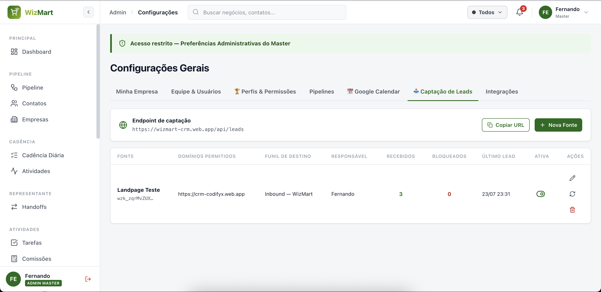
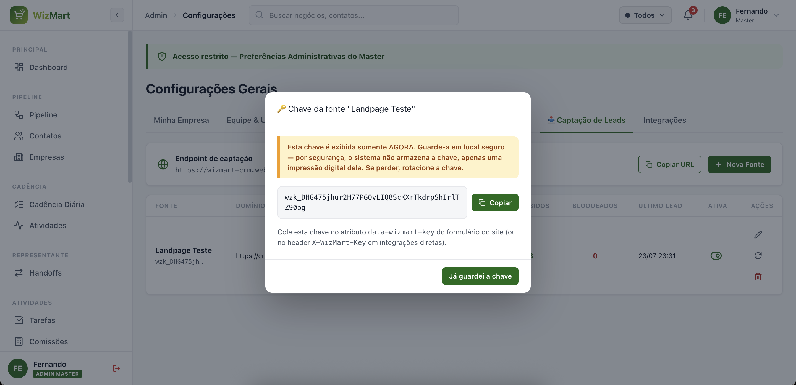

O WizMart Forms conecta os formulários do seu site e das suas landing pages direto ao WizMart CRM: quando alguém preenche um formulário, o lead já nasce como um card no funil certo — sem planilha, sem copiar e colar, sem depender de ninguém da equipe técnica.
Este guia mostra como configurar sozinho, do zero: criar a fonte de captação, colar o código no seu site (ou pedir para quem cuida do site colar) e testar que está tudo funcionando.
Se você tem um site em WordPress, Elementor, RD Station ou similar, vá direto para a seção "Receitas prontas". Se tem um desenvolvedor cuidando do site, encaminhe a seção "Integração direta" para ele.
O fluxo é simples: o visitante preenche o formulário no seu site, o WizMart Forms envia o contato para o CRM de forma segura, e o lead já aparece como card no funil — pronto para o time trabalhar.
Cada site (ou cada landing page) recebe uma fonte de captação própria no CRM, com sua chave de acesso e a lista de domínios autorizados a enviar leads por ela. Isso impede que outras pessoas usem sua chave em sites que não são seus.
Todo envio passa por múltiplas camadas de proteção automáticas: verificação de domínio, limite de envios por minuto, detecção de robôs e (opcionalmente) verificação anti-robô visível. Você não precisa configurar nada disso — já vem pronto em cada fonte que você cria.
Acesse → aba 📥 Captação de Leads.
https://wizmart.com.br). Use https://*.wizmart.com.br para liberar qualquer subdomínio.Por segurança, o CRM não guarda a chave em texto — só uma "impressão digital" dela. Assim que a fonte é criada, a chave aparece uma única vez na tela, com um botão de copiar. Copie e cole no seu site imediatamente. Se perder, não tem problema: você pode gerar uma nova a qualquer momento (veja a seção seguinte).


Você não depende de ninguém para ajustar uma fonte. Tudo isso vale na hora, sem precisar esperar uma atualização do sistema:
Essas mudanças são configuração, não código — valem imediatamente, sem precisar de nenhuma ação da equipe técnica.
É a forma mais simples: cole uma linha de script e adicione um atributo ao seu formulário. O WizMart Forms cuida do resto — envio, proteção anti-robô e mensagens de sucesso/erro.
<script src="https://wizmart-crm.web.app/wizforms.js"></script>data-wizmart-key ao seu formulário<form data-wizmart-key="SUA_CHAVE_AQUI">
<input type="text" name="name" placeholder="Seu nome" required>
<input type="email" name="email" placeholder="Seu e-mail">
<input type="tel" name="phone" placeholder="Seu WhatsApp">
<input type="text" name="company" placeholder="Empresa">
<button type="submit">Quero saber mais</button>
</form>Pronto — é só isso. Troque SUA_CHAVE_AQUI pela chave que você copiou ao criar a fonte.
Os nomes dos campos (name, email, phone, company,
message) precisam ser exatamente esses para o CRM reconhecê-los; qualquer outro campo do
formulário (ex.: "cidade", "interesse") também é enviado e fica disponível no card.
Atributo do <form> | Para que serve |
|---|---|
data-wizmart-success | Mensagem exibida quando o envio dá certo |
data-wizmart-error | Mensagem exibida quando o envio falha |
data-wizmart-redirect | Página para redirecionar após o envio (ex.: uma página de agradecimento) |
<form
data-wizmart-key="SUA_CHAVE_AQUI"
data-wizmart-success="Recebemos seu contato! Já vamos te chamar no WhatsApp."
data-wizmart-redirect="/obrigado">
...
</form>Toda fonte já vem com proteção automática contra robôs (invisível para quem preenche o formulário). Se uma fonte específica estiver recebendo muito spam, você pode ativar uma camada extra — um pequeno desafio visual do Cloudflare (o mesmo usado por milhões de sites).
data-wizmart-turnstile-sitekey
no formulário, com a chave pública fornecida pelo time técnico.<form data-wizmart-key="SUA_CHAVE_AQUI" data-wizmart-turnstile-sitekey="CHAVE_PUBLICA_TURNSTILE">
...
</form>O widget de verificação aparece sozinho dentro do formulário — não precisa de mais nenhuma configuração.
A maioria dos sites não precisa disso — as proteções automáticas já bloqueiam a grande maioria dos robôs. Ative apenas se notar spam recorrente numa fonte específica (acompanhe o contador "Bloqueados" na lista de fontes).
Se o seu site usa um sistema próprio de formulários (ou você quer integrar via JavaScript, app ou outro sistema), pode enviar o lead diretamente por uma chamada HTTP — sem depender do script pronto.
POST https://wizmart-crm.web.app/api/leads
Content-Type: application/json
X-WizMart-Key: SUA_CHAVE_AQUI
{
"name": "Maria Silva",
"email": "maria@empresa.com.br",
"phone": "(11) 98765-4321",
"company": "Mercado Bom Preço",
"message": "Quero saber mais sobre o Smart Café",
"tracking": {
"utmSource": "google",
"utmCampaign": "lancamento",
"pageUrl": "https://seusite.com.br/landing"
}
}{ "ok": true, "leadId": "aB3cD9eF..." }A requisição precisa ser feita do domínio autorizado na fonte (o header Origin
do navegador é conferido automaticamente). Para o contrato técnico completo — todos os campos aceitos,
limites e códigos de erro — consulte o documento API-LEADS.md, entregue junto com este guia.
| Código | Situação |
|---|---|
201 | Lead recebido com sucesso |
400 | Dados inválidos (falta nome, ou nem e-mail nem telefone informado) |
401 | Chave inválida ou fonte desativada |
403 | Domínio não autorizado para esta fonte |
429 | Muitos envios em pouco tempo (limite de proteção) |
O formulário nativo do Elementor não permite atributos personalizados. O caminho mais simples e confiável é usar um bloco de HTML personalizado:
A maioria dos construtores de landing page (RD Station, Unbounce, Instapage, etc.) tem um campo de "HTML personalizado" ou "Código embed". O procedimento é o mesmo:
Se o seu site já é feito em HTML "cru" (sem construtor visual), basta seguir a Opção A diretamente no arquivo da página.
O WizMart Forms funciona em cima do formulário que você já tem — não é preciso migrar de ferramenta nem recriar o design da página.
Se o link que trouxe o visitante até o formulário tiver parâmetros de campanha na URL (UTMs — usados no Google Ads, Meta Ads, e-mail marketing, etc.), o WizMart Forms captura automaticamente e mostra no card do CRM.
https://seusite.com.br/landing?utm_source=google&utm_campaign=lancamento_julhoNo card do negócio, aparece um selo "Origem: [nome da fonte]" junto com badges das campanhas identificadas — assim o time sabe exatamente de onde veio cada lead, sem precisar perguntar.
Depois de colar o código, faça este teste rápido:
O card aparece no funil com o selo de origem (nome da fonte) e o contador de "Recebidos" sobe a cada teste.
| O que você vê | Causa provável | O que fazer |
|---|---|---|
| Preenchi o formulário mas nada aconteceu na tela | O script não foi carregado, ou o atributo data-wizmart-key está faltando/errado |
Confira se a linha do <script> está na página e se a chave foi colada corretamente |
| Mensagem de erro aparece ao enviar | Domínio não cadastrado na fonte, ou chave desativada/rotacionada | Em Configurações → Captação de Leads, confira os domínios autorizados e se a fonte está ativa |
| O contador "Bloqueados" está subindo bastante | Robôs tentando preencher o formulário automaticamente | Normal em baixo volume (as proteções já barram sozinhas); se persistir, ative o Turnstile |
| O lead chegou duplicado no funil | A pessoa preencheu o formulário mais de uma vez | O sistema já evita duplicidade em 24h para o mesmo e-mail/telefone — se aconteceu, confira se os dados eram realmente diferentes |
| Testei e não apareceu nenhum card | Fonte apontando para o funil errado, ou você está olhando outro funil | Confira em Configurações → Captação de Leads qual é o "Funil de destino" da fonte |
Fale com o time técnico informando o nome da fonte e o horário do teste — isso agiliza bastante a investigação.